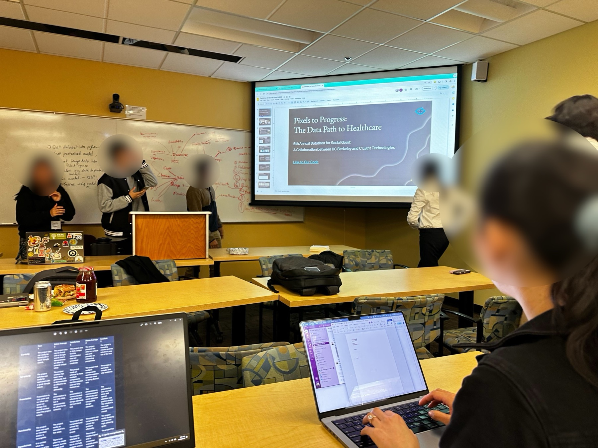
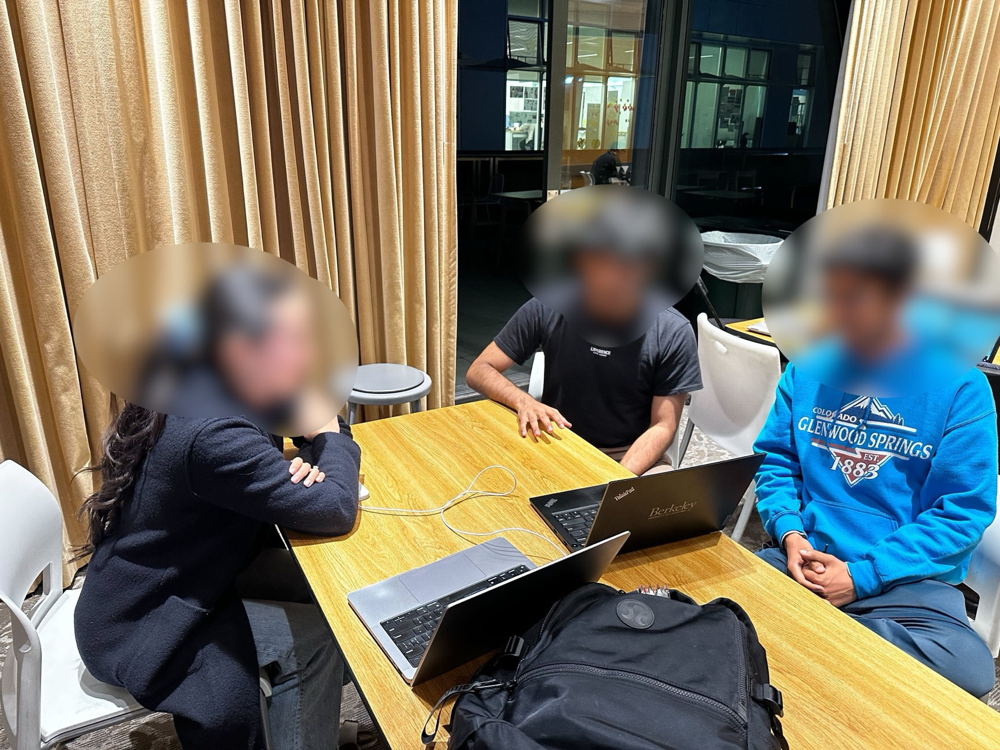
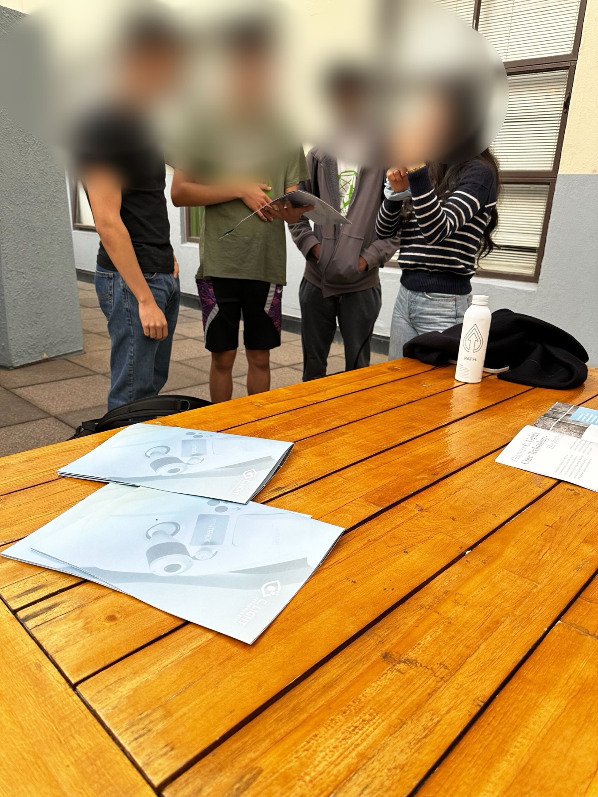

Insperity
HR data, and how a workforce actually runs.
How We Build Is Changing. How We Hire Should Too.
The AI / Data Science Hub brings emerging AI and data science talent, universities, and tech companies together to tackle real questions. In a datathon, candidates show how they frame a question, analyze a dataset, and present charts and findings. Hiring teams get to see how candidates think, collaborate, and explain a result.
Start a conversationAI coding tools write a lot of the first draft now. What a hiring team still has to see is judgment: what a person asks, what they throw out, and how they explain a messy result.
A resume lists courses. It rarely shows curiosity, or how someone works when another person is in the room. The AI / Data Science Hub is that room. Students meet a dataset earlier, and companies meet the people behind the work.
A datathon. Teams work with data, answer a question set, make charts, and present.
In November 2023, Joe Xing, PhD, helped host UC Berkeley’s fifth annual Datathon for Social Good. He was a sponsor and an advisor, and he designed problems for data science and machine learning students. He sat with the teams while they worked.




These are examples of companies we intend to approach and ask to partner and participate. The projects are examples of what The Job Forum sponsored by the SF Chamber and the companies may agree on to move forward.
HR data, and how a workforce actually runs.

Language prompts that drive 3D CAD.
Generative video and images for a games studio.

Models of a professional network.

Workforce programs: veterans, suppliers, employee groups, and the extended workforce. Google already supports The Job Forum’s work with veterans.
An IT help desk that answers through AI ticketing.

A social product, and the questions around community and safety.
Janet Beach and Joe Xing, PhD, are looking for student groups and companies who want to co-host. If another student leader handles partnerships, an introduction is welcome.
Executive Director of The Job Forum. The San Francisco Chamber of Commerce fiscally sponsors the organization. The Job Forum is a leading nonprofit community service (thejobforum.org) educating and supporting effective modern job search methods, which the organization teaches and advises motivated job hunters in the SF Bay Area to use while job hunting for their next role.
Advisor, AI and Data Science. A Stanford- and CERN-trained scientist, volunteering with Janet on the AI / Data Science Hub. He has co-founded several companies and brought an FDA-cleared medical product to market. A UC Berkeley spinout founder, he is now founder of Clinical Token, a new AI for healthcare initiative.